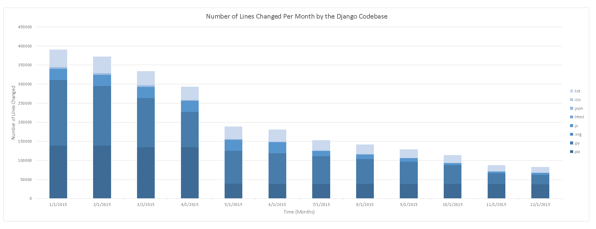

Figure 1: Here we see a stacked bar graph for the number of lines changed
across multiple files, by filetype for the rails project. The horizontal
axis represents time elapsed, by month. Note the huge spike in changes
in August, when there appears to have been a release in the rails codebase.
Stacked Django

Figure 2: here we see a stacked bar graph, similar in nature to Figure 1,
which instead represents the codebase for Django over time. Note that the
graph differs greatly from the rails codebase in that it monotomically
decreases throughout the lifetime of the project. This might be due to the
fact that django is a faster moving project, or due to the fast paced development
of python itself.